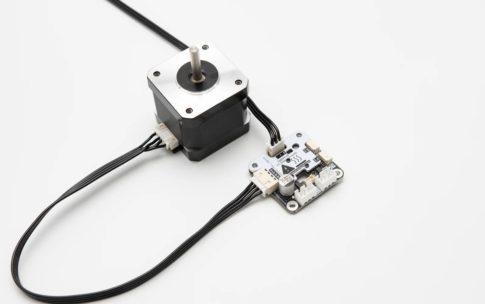
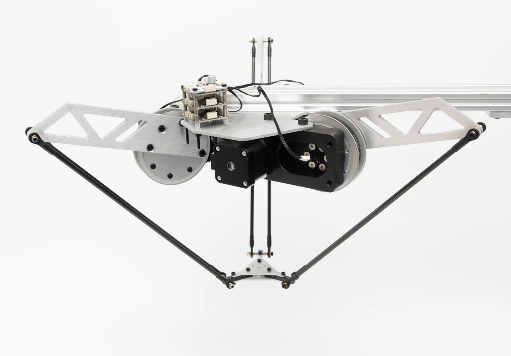
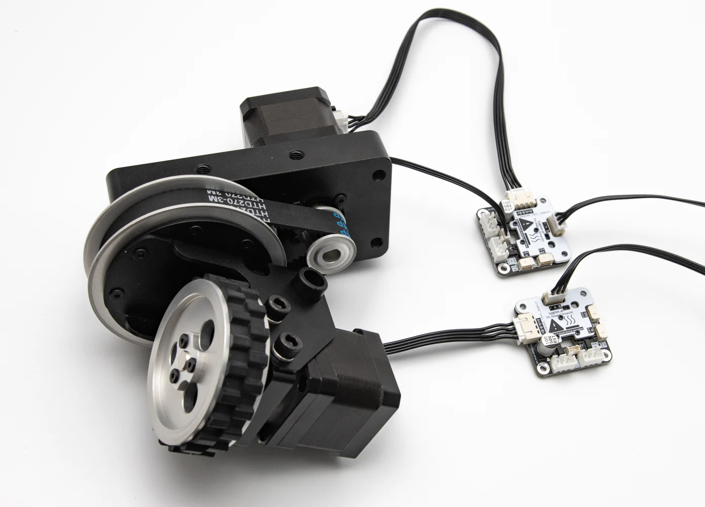
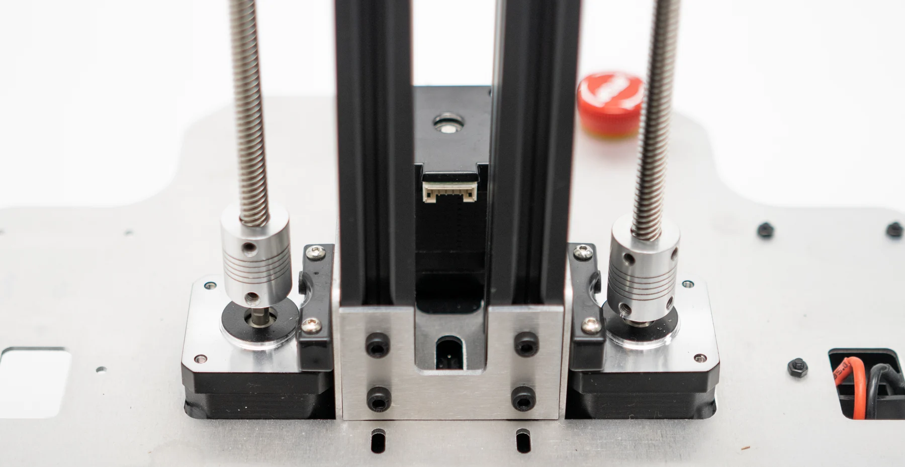
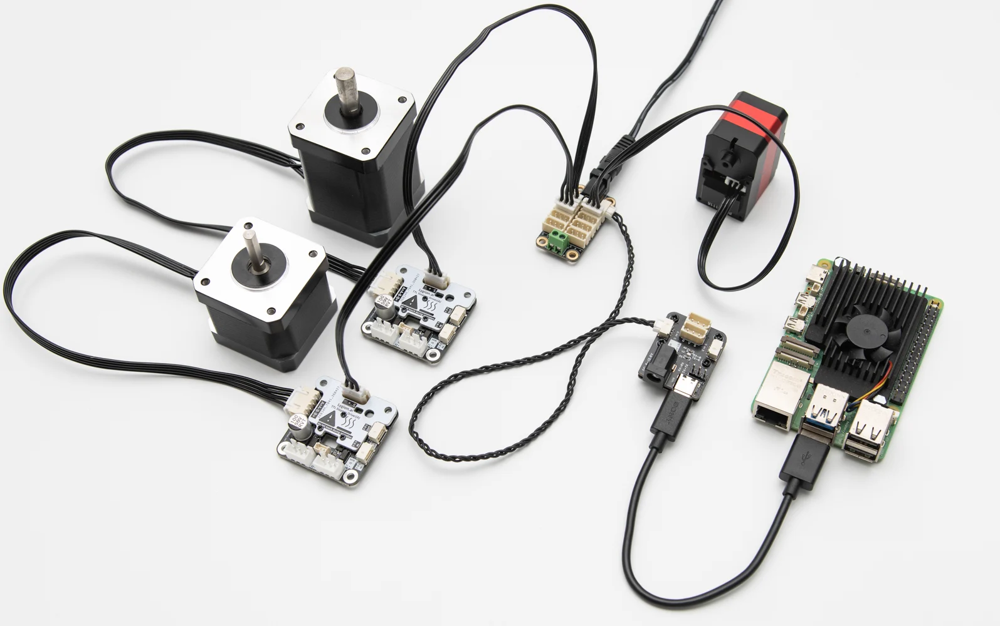
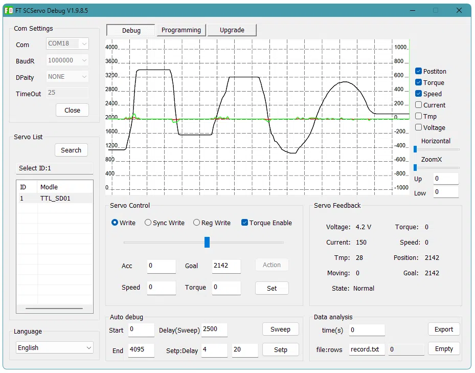
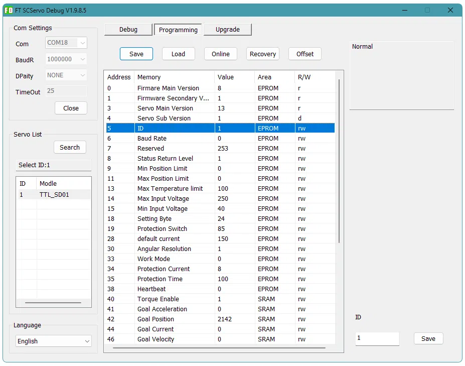
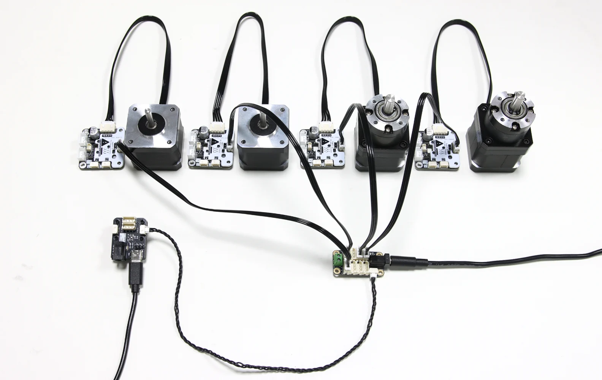
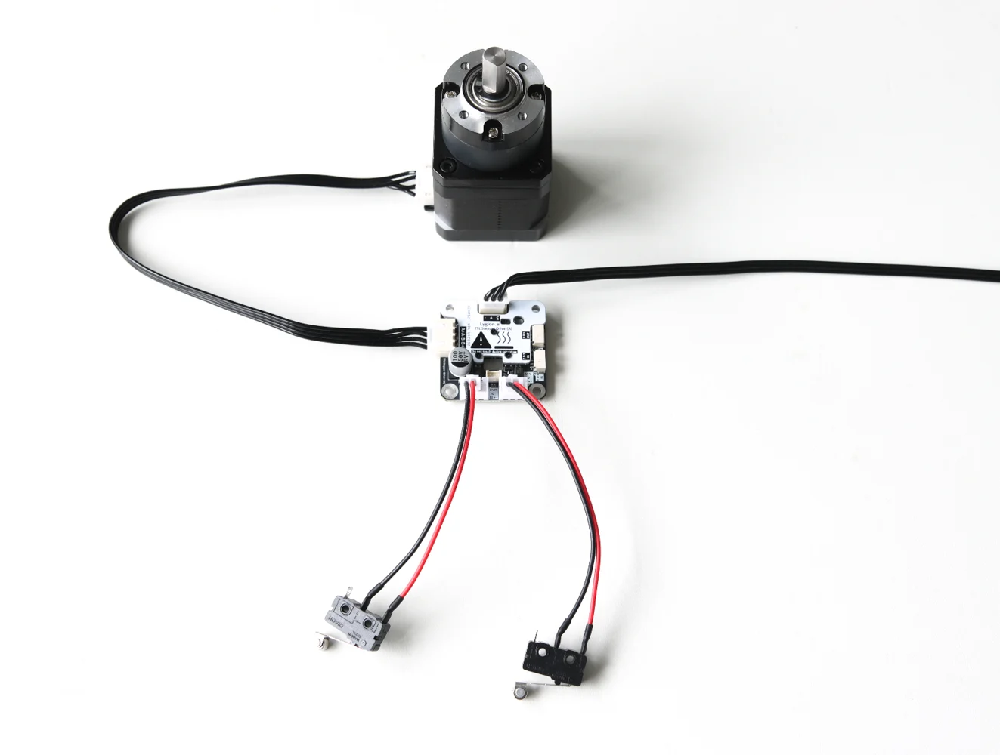
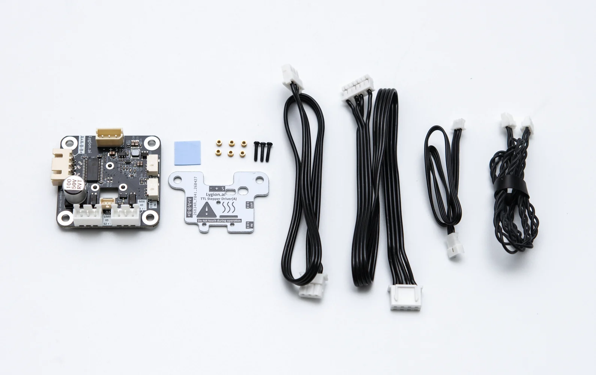

Stepper motors as bus devices
Multiple drivers can use independent IDs and share the same TTL bus, reducing wiring and software complexity.
Multi-device controlTTL STEPPER DRIVER
A TTL bus stepper driver for robot applications. The host sends position, speed, current, and mode commands; the driver handles the low-level motion control.

WHAT IT SOLVES
Traditional stepper control requires the controller to continuously generate pulses and handle speed curves, limits, and synchronization. TTL Stepper Driver (A) moves these tasks into the driver, so the host can send simple TTL bus commands instead.
Multiple drivers can use independent IDs and share the same TTL bus, reducing wiring and software complexity.
Multi-device controlSpeed and acceleration parameters are handled by the driver, reducing sudden mechanical shock.
More controlled motionMinimum and maximum limit inputs can stop dangerous motion directions without constant polling from the application layer.
Safer mechanismsRead position, speed, voltage, temperature, motion state, and other status values for debugging and higher-level control.
Observable motion systemCONTROL MODES




TTL BUS SYSTEM
PCs, Raspberry Pi, Jetson, and other SBCs can connect through TTL Adapter (A) over USB. ESP32, STM32, and other MCUs can connect through UART-to-single-wire-TTL hardware. Multiple drivers, encoders, and other TTL bus devices can form a shared low-level motion and sensing network.
EASY TO START
The Wiki provides FD software usage, Python quickstart, and C++ / Arduino examples. New users can first verify device connection and ID configuration, then test position, speed, limit, and synchronization behavior.
Connect the stepper motor, power input, and TTL Adapter (A).
Devices on the same bus must use different IDs, so configure the ID before multi-device use.
Use the open SDK and examples from the Wiki to control the motor from Python or C++.
FD SOFTWARE
FD software is a useful first-step verification tool: confirm the device is online, change ID, tune current, speed, acceleration, and mode parameters, then move the settings into your program.



BOARD INTERFACES

SPECIFICATIONS
PACKAGE CONTENTS
The standard kit includes the driver board, bus cable, motor cable, sync cable, heat dissipation parts, and mounting accessories for basic bring-up.

| Name | Quantity |
|---|---|
| TTL Stepper Driver (A) | x1 |
| 5264-3P cable, 25 cm | x1 |
| Stepper motor cable, 25 cm | x1 |
| GH1.25-3P cable, 30 cm | x1 |
| Aluminum heat sink | x1 |
| Thermal silicone pad | x1 |
| Round-head screws | M1.4*7 x3 |
| Nuts | M1.4*1.4*2.3 x6 |
| Washers | 3*6*1.5 x2 |
DEVELOPMENT SUPPORT
Debugging tools, SDKs, examples, and hardware documents are organized in the product Wiki.